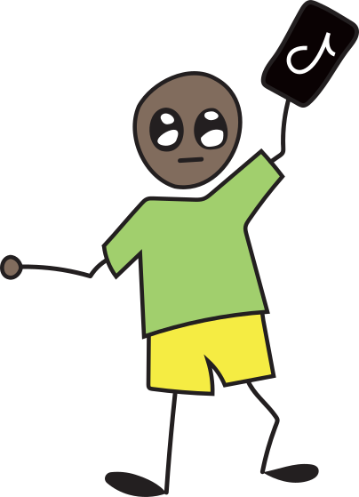
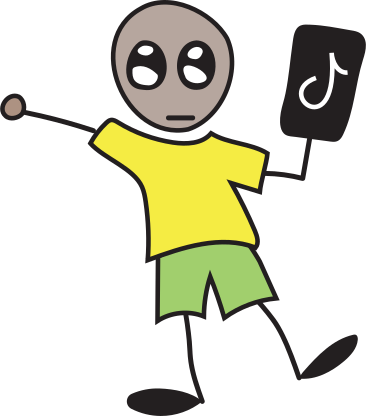
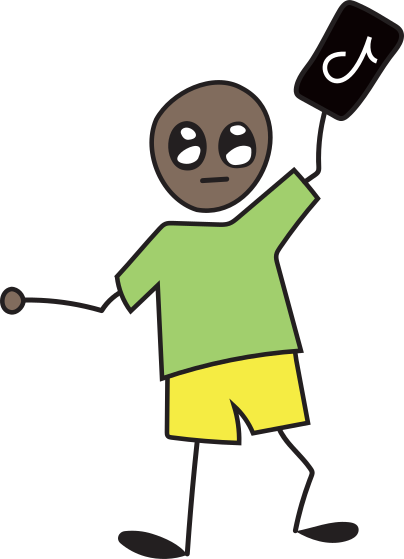
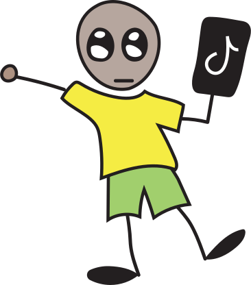

Vær en miljødetektiv
Se om du kan finne ut hvor stort karbonfotavtrykk du har
Hvis 1,1 billioner brukere bruker tiktok i fem minutter, tilsvarer det:
Unngå å bytte ut telefonen din ofte (det fører til mye e-avfall)
Koble fra strømmen når du ikke bruker enhetene dine
Hva kan du gjøre?
Slett unna e-poster du ikke trenger
Reduser skjermtiden din og bruk heller mer tid ute. (les en bok, gå ut og lek, gå en tur)
Reduser lysstyrken på skjermen din
Last ned plakat:
https://www.ntnu.no/web/design/digital-barekraft/illustrasjonerKontakt: carlos.vicient@ntnu.no